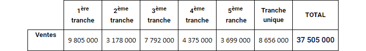
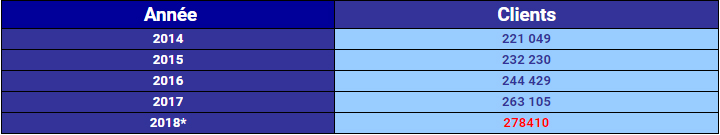
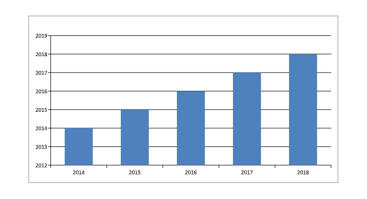
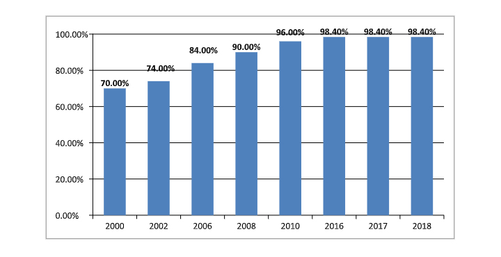
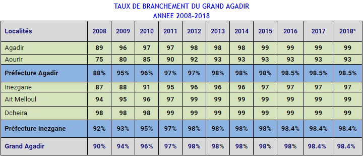
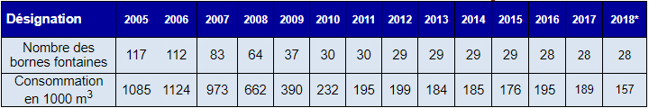
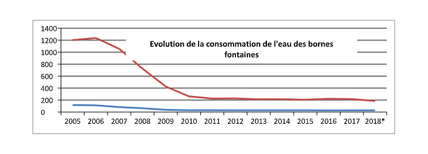
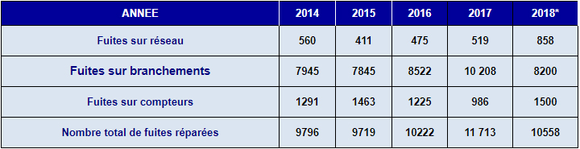

Espace Technique
Eau Potable
Consommation et clients
Évolution des ventes d’Eau
La demande en Eau et la consommation au titre de l’année 2018 ont connu une légère augmentation respectivement de l’ordre de 1.6% et 2.1% par rapport à celles de l’année 2017. (*) Estimé
Répartition des ventes par tranche tarifaire 2018
La structure de consommation en 2018 est comme suit :
Evolution du nombre de clients
Le nombre de clients probable au 31/12/2018, est estimé à 278 410 clients,toutes catégories confondues. L’évolution du nombre de clients au cours des 5 dernières années est représentée ci-après : L’accroissement annuel du nombre de clients entre 2017 et 2018 est estimé à 5,8 %.
 Évolution du Taux de Branchement
Le taux de branchement en eau potable du grand Agadir a connu une amélioration due d’une part aux efforts déployés par la RAMSA en termes de généralisation de l’accès à l’eau et d’autre part à la suppression des bornes fontaines et au recasement des bidonvilles.
TAUX DE BRANCHEMENT EN EAU DU GRAND AGADIR
Evolution de la consommation de l’eau des bornes fontaines au niveau du Grand Agadir
 Cette baisse importante des volumes des consommations des bornes fontaines est due essentiellement à la suppression de ces dernières suite à la généralisation de l’accès à l’eau dans le cadre de l’opération des branchements sociaux.
AMELIORATION DE LA QUALITE DE SERVICE ET ENTRETIEN DES RESEAUX
L’évolution au cours des 5 dernières années du nombre de fuites réparées est indiquée dans le tableau ci-dessous:
© RAMSA
Realisation 2019